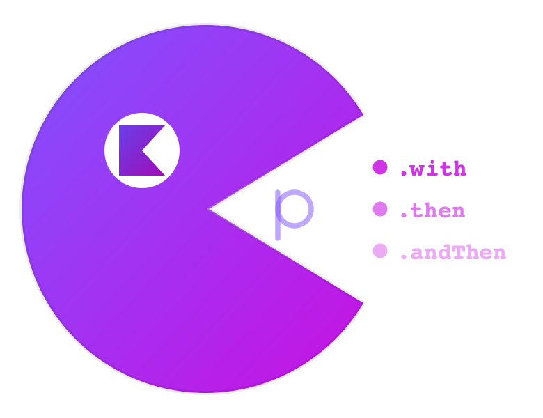

KAP — Kotlin Async Parallelism
Type-safe multi-service orchestration for Kotlin coroutines.
Flat chains, visible phases, compiler-checked argument order.
11 services. 5 phases. One flat chain.¶
You have a checkout flow: fetch user, cart, promos, inventory in parallel. Wait. Validate stock. Wait. Calculate shipping, tax, discounts in parallel. Wait. Reserve payment. Wait. Generate confirmation and send email in parallel.
With raw coroutines, this is 30+ lines of shuttle variables, invisible phases, and silent bugs:
// Raw coroutines: 30+ lines, invisible phases, silent bugs
val checkout = coroutineScope {
val dUser = async { fetchUser() }
val dCart = async { fetchCart() }
val dPromos = async { fetchPromos() }
val dInventory = async { fetchInventory() }
val user = dUser.await() // ← move above async? Silent serialization.
val cart = dCart.await() // ← swap with promos? Same type = no compiler error.
val promos = dPromos.await()
val inventory = dInventory.await()
val stock = validateStock() // Where does phase 1 end? You have to read every line.
val dShipping = async { calcShipping() }
val dTax = async { calcTax() }
val dDiscounts = async { calcDiscounts() }
val shipping = dShipping.await()
val tax = dTax.await()
val discounts = dDiscounts.await()
val payment = reservePayment() // Another invisible barrier.
val dConfirmation = async { generateConfirmation() }
val dEmail = async { sendEmail() }
CheckoutResult(
user, cart, promos, inventory, stock,
shipping, tax, discounts, payment,
dConfirmation.await(), dEmail.await()
)
}
With KAP:
val checkout: CheckoutResult = Async {
kap(::CheckoutResult)
.with { fetchUser() } // ┐
.with { fetchCart() } // ├─ phase 1: parallel
.with { fetchPromos() } // │
.with { fetchInventory() } // ┘
.then { validateStock() } // ── phase 2: barrier
.with { calcShipping() } // ┐
.with { calcTax() } // ├─ phase 3: parallel
.with { calcDiscounts() } // ┘
.then { reservePayment() } // ── phase 4: barrier
.with { generateConfirmation() } // ┐ phase 5: parallel
.with { sendEmail() } // ┘
}
30 lines vs 12. Invisible phases vs explicit phases. Silent bugs vs compile-time safety. Swap any two .with lines and the compiler rejects it — each service returns a distinct type, and the typed function chain locks parameter order.
t=0ms ─── fetchUser ────────┐
t=0ms ─── fetchCart ────────┤
t=0ms ─── fetchPromos ─────├─ phase 1 (parallel)
t=0ms ─── fetchInventory ──┘
t=50ms ─── validateStock ───── phase 2 (barrier)
t=60ms ─── calcShipping ────┐
t=60ms ─── calcTax ─────────├─ phase 3 (parallel)
t=60ms ─── calcDiscounts ───┘
t=80ms ─── reservePayment ──── phase 4 (barrier)
t=90ms ─── generateConfirm ─┐
t=90ms ─── sendEmail ───────┘─ phase 5 (parallel)
t=130ms ─── done
130ms total (vs 460ms sequential). Verified in ConcurrencyProofTest.kt.
Value-dependent phases¶
Real APIs have dependencies: phase 2 needs phase 1's results. With raw coroutines, you thread values through variables manually. With KAP, the dependency graph is the code shape:
val userId = "user-42"
val dashboard: FinalDashboard = Async {
kap(::UserContext)
.with { fetchProfile(userId) } // ┐
.with { fetchPreferences(userId) } // ├─ phase 1: parallel
.with { fetchLoyaltyTier(userId) } // ┘
.andThen { ctx -> // ── barrier: ctx available
kap(::EnrichedContent)
.with { fetchRecommendations(ctx.profile) } // ┐
.with { fetchPromotions(ctx.tier) } // ├─ phase 2: parallel
.with { fetchTrending(ctx.prefs) } // │
.with { fetchHistory(ctx.profile) } // ┘
.andThen { enriched -> // ── barrier
kap(::FinalDashboard)
.with { renderLayout(ctx, enriched) } // ┐ phase 3
.with { trackAnalytics(ctx, enriched) } // ┘
}
}
}
t=0ms ─── fetchProfile ──────┐
t=0ms ─── fetchPreferences ──├─ phase 1 (parallel)
t=0ms ─── fetchLoyaltyTier ──┘
t=50ms ─── andThen { ctx -> } ── barrier, ctx available
t=50ms ─── fetchRecommendations ──┐
t=50ms ─── fetchPromotions ───────├─ phase 2 (parallel)
t=50ms ─── fetchTrending ─────────┤
t=50ms ─── fetchHistory ──────────┘
t=90ms ─── andThen { enriched -> } ── barrier
t=90ms ─── renderLayout ──┐
t=90ms ─── trackAnalytics ┘─ phase 3 (parallel)
t=115ms ─── FinalDashboard ready
14 service calls, 3 phases, 115ms vs 460ms sequential.
Add resilience in the same chain¶
val breaker = CircuitBreaker(maxFailures = 5, resetTimeout = 30.seconds)
val retryPolicy = Schedule.times<Throwable>(3) and Schedule.exponential(10.milliseconds)
val result = Async {
kap(::Dashboard)
.with(Kap { fetchUser() }
.withCircuitBreaker(breaker) // protect downstream
.retry(retryPolicy)) // exponential backoff
.with(Kap { fetchFromSlowApi() }
.timeoutRace(100.milliseconds, // both start at t=0
Kap { fetchFromCache() })) // fallback already running
.with { fetchPromos() }
}
Collect every validation error at once¶
val result: Either<NonEmptyList<RegError>, User> = Async {
zipV(
{ validateName("A") }, // ← too short
{ validateEmail("bad") }, // ← invalid
{ validateAge(10) }, // ← too young
{ checkUsername("al") }, // ← too short
) { name, email, age, username -> User(name, email, age, username) }
}
// result = Left(NonEmptyList(NameTooShort, InvalidEmail, AgeTooLow, UsernameTaken))
// ALL 4 errors in ONE response. No round trips.
Scales to 22 validators (Arrow's zipOrAccumulate maxes at 9).
Modules¶
| Module | What you get | Depends on |
|---|---|---|
kap-core |
with, then, andThen, race, traverse, memoize, settled, timeout, recover |
kotlinx-coroutines-core |
kap-resilience |
Schedule, CircuitBreaker, Resource, bracket, timeoutRace, raceQuorum |
kap-core |
kap-arrow |
zipV, withV, validated {}, attempt(), raceEither |
kap-core + Arrow |
kap-ktor |
Ktor plugin, circuit breaker registry, tracers, respondAsync |
kap-core + Ktor |
kap-kotest |
shouldSucceedWith, shouldFailWith, timing & lifecycle matchers |
kap-core (test) |
dependencies {
implementation("io.github.damian-rafael-lattenero:kap-core:2.5.0")
// Optional
implementation("io.github.damian-rafael-lattenero:kap-resilience:2.5.0")
implementation("io.github.damian-rafael-lattenero:kap-arrow:2.5.0")
implementation("io.github.damian-rafael-lattenero:kap-ktor:2.5.0")
testImplementation("io.github.damian-rafael-lattenero:kap-kotest:2.5.0")
}
Benchmarks¶
All claims backed by 119 JMH benchmarks and deterministic virtual-time proofs.
| Dimension | Raw Coroutines | Arrow | KAP |
|---|---|---|---|
| Framework overhead (arity 3) | <0.01ms | 0.02ms | <0.01ms |
| Framework overhead (arity 9) | <0.01ms | 0.03ms | <0.01ms |
| Simple parallel (5 x 50ms) | 50.27ms | 50.33ms | 50.31ms |
| Multi-phase (9 calls, 4 phases) | 180.85ms | 181.06ms | 180.98ms |
| Race (50ms vs 100ms) | 100.34ms | 50.51ms | 50.40ms |
| timeoutRace (primary wins) | 180.55ms | -- | 30.34ms |
| Max validation arity | -- | 9 | 22 |